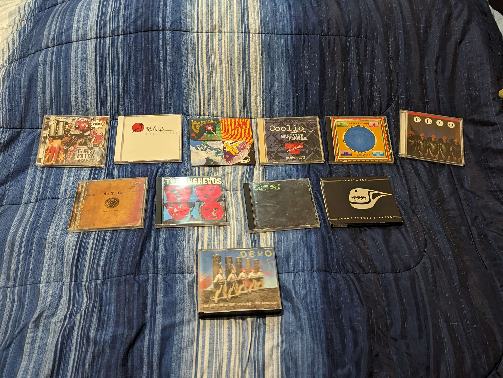

Dungeon's and Dragon's 3.5e books Shrek 2 DVD (legal) Dice Box Cd Collection Tiny Bible
So as you might know I submitted a database containing all of my CDs. Anyway here you go. Here’s a complete list of my CDs. The Pod, quebec, the cars complete greatest hits, More songs about buildings and food, Pinkerton, Out of the Blue, Duck Stab / Buster & Glen, The Commercial Album, The Wall, Billy Cobb (bear album), Murder of the Universe, Eldorado, Upbeats and beatdowns, Weezer (blue), Flying microtonal banana, Mothermania, The Man Machine, Mezmerize, Sheik Yerbouti, Frances the Mute, The Dark Side of the Moon, The Pleasure Principle, Wish you were here, Running with Scissors, Pure Guava, Joe’s Garage Acts I, II, and III, How to Be Cool, Ok Computer, Straight out of Lynnwood, Nonagon Infinity, Burnt Weeny Sandwich, California, Quarters, Gangsta’s Paradise, Speaking in tongues, Freedom of choice, Jesus Freak, Remain in light, Fear of Music, Trans Europe Express, Pioneers who got scalped: the Anthology. Anyway I’m looking for the Not Available cd by the residents. Specifically the pREServed edition.
